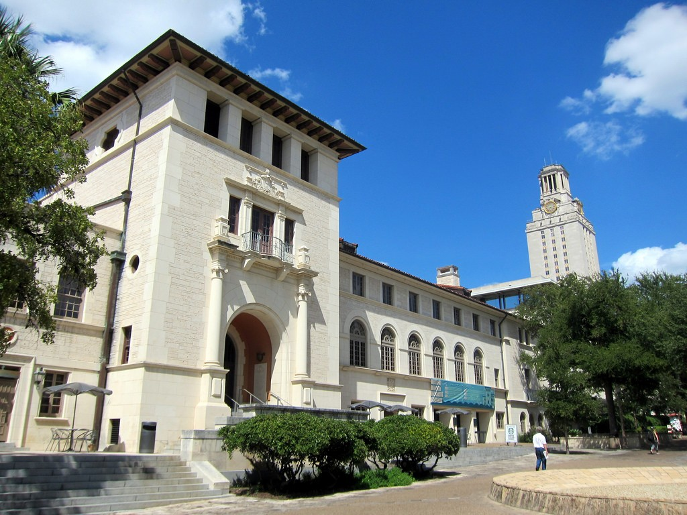

Texas Union
Overview
The Texas Union Executive Director's Office handles all activities, events, and business operations of the Texas Union building. The Union is surprisingly complex as it houses a variety of study rooms, venue spaces, restaurants, and an internal catering company.
Experience
As the receptionist of the office, my duties consisted of assisting all office staff, maintaining supplies inventory, and attending office visitors. On special occasions, I also ran errands on university vehicles. I worked part-time throughout all of the 2015-2016 academic school years. The job was very laid back and I enjoyed the office environment. It was interesting to see some of the internal functions of the university. Considering all that my parents have sacrificed for me, I'm happy to work a few hours a week to at least cover my basic living expenses.
